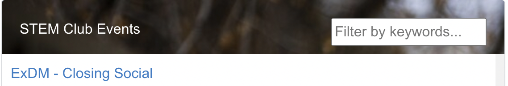

Scot Nielson
<<< back
STEM.byu.edu
For the past few semesters, I've worked as a Web Developer and Data Analyst at BYU Career Services leading the creation of a STEM-focused website for students and employers.
I had done very little web development prior to this project but read through a book on Javascript the weekend before my interview, which has come in handy dozens of times working on this project. One piece I am most proud of are the event and job feeds on the page, which I personally wrote in Javascript rather than just subscribing to a third-party RSS Feed service. Creating them myself even allowed for additional features, like the keyword search that enables quick filtering on the feed.
The coding and technical aspects were definitely a challenging and rewarding element of building this site, but equally worthwhile was the opportunity to work with nearly every department across BYU campus to design and create unqiue pages for the many programs offered at my university. Students, clubs, and even employers are already finding valuable information and making important connections thanks to this effort.
The live site is available at https://stem.byu.edu/.